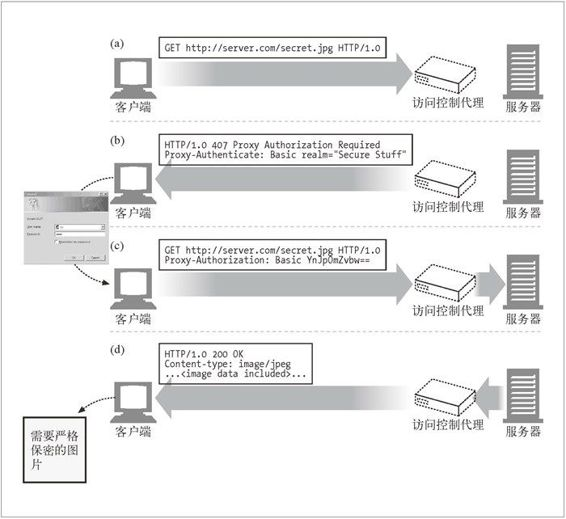

6.7 代理认证
代理可以作为访问控制设备使用。HTTP 定义了一种名为代理认证（proxy authentication）的机制，这种机制可以阻止对内容的请求，直到用户向代理提供了有效的访问权限证书为止。
对受限内容的请求到达一台代理服务器时，代理服务器可以返回一个要求使用访问证书的 407 Proxy Authorization Required 状态码，以及一个用于描述怎样提供这些证书的 Proxy-Authenticate 首部字段（参见图 6-25b）。
客户端收到 407 响应时，会尝试着从本地数据库中，或者通过提示用户来搜集所需要的证书。
只要获得了证书，客户端就会重新发送请求，在 Proxy-Authorization 首部字段中提供所要求的证书。
如果证书有效，代理就会将原始请求沿着传输链路向下传送（参见图 6-25c）；否则，就发送另一条 407 应答。

图 6-25 代理可以实现认证机制以控制对内容的访问
若传输链路中有多个代理，且每个代理都要进行认证时，代理认证通常无法很好地工作。人们建议，应该对 HTTP 进行升级，将认证证书与代理链中特定的路标联系起来，但这些升级措施并没有得到广泛实现。
有关 HTTP 认证机制的详细解释请参见第 12 章。